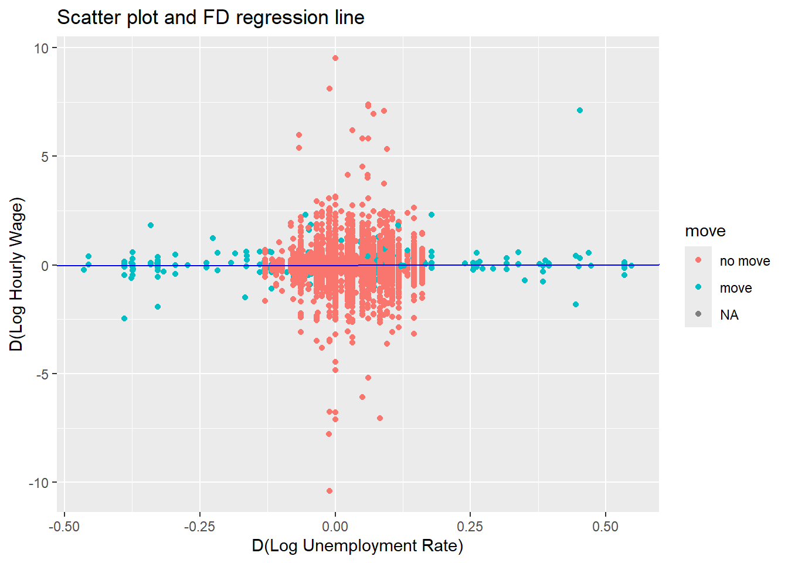

Introduction to Panel Regression
Preparing your workfile
We add the basic libraries needed for this week’s work:
library(tidyverse) # for almost all data handling tasks
library(ggplot2) # to produce nice graphics
library(stargazer) # to produce nice results tables
library(haven) # to import stata file
library(AER) # access to HS robust standard errorsWe will also use one function saved in a .r file. The function in this file will be explained below. This file is available for download from here: stargazer_HC.R. When you get to that page you will see a download button.

You should save this files into your working directory. You can then this functions available to your code using this line.
source("stargazer_HC.r") # includes the robust regression displayAs we are using panel methods we also require an additional package
plm.
#install.packages("plm") # only execute this if plm is not installed yet
library(plm)Introduction
The data are an extract from the Understanding Society Survey (formerly the British Household Survey Panel). The question we are looking at using these data is how responsive wages are to local unemployment rates. Or in other words, do wages respond to unemployment rates (increase if unemployment is low and decrease if unemployment is high)? For instance Blanchflower and Oswald (1989) find that there is such a negative relationship.
Data Upload - and understanding data structure
Load the data (20222_USoc_extract.dta),
which are saved in a STATA datafile (extension .dta), into
your working directory. There is a function which loads STATA file. It
is called read_dta and is supplied by the
haven package.
## [1] "pidp" "age" "jbhrs" "paygu" "wave" "cpi" "year"
## [8] "region" "urate" "male" "race" "educ" "degree" "mfsize9"data_USoc <- read_dta("20222_USoc_extract.dta")
data_USoc <- as.data.frame(data_USoc) # ensure data frame structure
names(data_USoc)Let us ensure that categorical variables are stored as
factor variables. It is easiest to work with these in
R.
data_USoc$region <- as_factor(data_USoc$region)
data_USoc$male <- as_factor(data_USoc$male)
data_USoc$degree <- as_factor(data_USoc$degree)
data_USoc$race <- as_factor(data_USoc$race)Here we used the as_factor function to turn the
variables into factor variables. You could have used
as.factor. But when you get data from STATA files, they
often come with labels and as_factor ensures that the
factor levels are defined according to the labels rather than just
numbers.
The pay information (paygu) is provided as a measure of
the (usual) gross pay per month. As workers work for varying numbers of
hours per week (jbhrs) we divide the monthly pay by the
approximate monthly hours (4*jbhrs). We shall also adjust
for increasing price levels (as measured by cpi). These two
adjustments leave us with an inflation adjusted hourly wage. We call
this variable hrpay and also calculate the natural log of
this variable (lnhrpay).
data_USoc <- data_USoc %>%
mutate(hrpay = paygu/(jbhrs*4)/(cpi/100)) %>%
mutate(lnhrpay = log(hrpay))As we wanted to save these additional variables we assign the result
of the operation to data_USoc.
We will also use the logarithm of the unemployment rate
data_USoc <- data_USoc %>%
mutate(lnurate=log(urate)) Understanding the Panel Structure
To explain the meaning of these let us just pick out all the
observations that pertain to one particular individual
(pidp == 272395767). The following command does the
following in words: “Take data_USoc filter/keep all
observations which belong to individual pidp == 272395767, then select a
list of variables (we don’t need to see all 14 variables) and print the
result”:
data_USoc %>% filter(pidp == 272395767) %>%
select(c("pidp","male","wave","year","paygu","age","educ")) %>%
print()## pidp male wave year paygu age educ
## 1 272395767 female 1 2009 775 40 11
## 2 272395767 female 2 2010 812 41 11
## 3 272395767 female 3 2011 772 42 11The same person (female) was observed three years in a row (from 2009 to 2011). Their gross monthly income changed, as did, of course, their age, but not their education. This particular person was observed in three consecutive waves. Let’s see whether this is a common pattern.
In the context of this exercise we will ignore the second wave and only look at waves 1 and 3.
data_USoc <- data_USoc %>%
filter(wave != 2) %>%
filter(!is.na(lnhrpay))The code below figures how many waves we have for each individual (1
or 2) and then saves this in a new variable (n_wave). This
information will be used later as we may want to know whether only using
observations for which we have both waves makes a difference to the
analysis.
data_USoc <- data_USoc %>%
group_by(pidp) %>%
mutate(n_wave = n()) Now we need to let R know that we are dealing with panel data. This
is why we loaded up the plm library which contains the
plm.data function. Using the
index = c("pidp","wave") we let the function know what
identifies the individuals and what identifies the wave.
pdata_USoc <- pdata.frame(data_USoc, index = c("pidp","wave")) # defines the panel dimensionsWe saved the output in pdata_USoc and we will use this
for any panel data estimations.
When dealing with panel data it is super useful to understand in how
many and in which wave individuals are presented. We already calculated
the n_wave variable which tells us in how many of our
remaining two waves observations are represented. We also have
information (wave) on which wave someone is represented in.
To disentagle this we merely need a contingency table of
the n_wave and waves variables.
table(pdata_USoc$n_wave,pdata_USoc$wave, dnn = c("n_waves","waves"))## waves
## n_waves 1 3
## 1 9666 4112
## 2 13078 13078Naturally the 13078 respondents which have two observations
(n_wave == 2) are represented in waves 1 and 3. Then we
have (n_wave == 1) 9666 respondents which are represented
in wave 1 and the 4112 which are represented in wave 3.
For the respondents for which we have 2 waves of observations we can
actually calculate a difference, or change in variables. This will
become important in a later model estimation (although for that we could
let R do the work in the background) and hence we will calculate these
variables explicitly, here for lnhrpay and
lnurate.
# the lag function below will recognise the panel nature of the data and
# will only calculate lags for individuals
# we also need to specify that we are calculating k=2 step lag as
# we calculate the difference between wave 3 and 1
Dlnhrpay <- pdata_USoc$lnhrpay-lag(pdata_USoc$lnhrpay,k=2)
Dlnurate <- pdata_USoc$lnurate-lag(pdata_USoc$lnurate,k=2)
pdata_USoc$Dlnhrpay <- Dlnhrpay # add the new series to the dataframe
pdata_USoc$Dlnurate <- DlnurateFor a later purpose we will also identify all individuals who moved from one region to another between waves 1 and 3. It is not so important to understand this code.
temp <- pdata_USoc # create a temporary dataframe
temp <- temp %>% filter(n_wave == 2) %>% # only keep individuals with two waves
group_by(pidp) %>% # group data by individual
mutate(move = ifelse(length(unique(region))==1,"no move","move")) %>%
select(pidp,wave,move) # only keep these 3 variables
# the move variable will take the value 1 if both regions are identical (no move)
# and 2 if there are two different regions (move)
temp$move <- as_factor(temp$move) # convert to factor variable
# the following merges the new variable into the pdata_USoc dataframe
pdata_USoc <- merge(pdata_USoc,temp,all.x = TRUE) Let’s check how many movers there are.
pdata_USoc %>% count(move)## move n
## 1 no move 25804
## 2 move 352
## 3 <NA> 13778So ther are 352 observations associated with movers. That means that there are 176 movers as each mover will have two observations.
Some data descriptions
We will use the lnhrpay and the urate
variables below. We therefore will have a look at these variables. Below
we will use the stargazer function to show some summary
statistics.
stargazer(pdata_USoc[,c("lnhrpay","urate","year","Dlnhrpay","Dlnurate")],type = "text")##
## ==================================================
## Statistic N Mean St. Dev. Min Max
## --------------------------------------------------
## lnhrpay 39,934 2.300 0.640 -7.800 8.900
## urate 39,934 7.900 1.300 5.800 11.000
## year 39,934 2,010.000 1.100 2,009 2,013
## Dlnhrpay 13,078 -0.009 0.520 -10.000 9.500
## Dlnurate 13,078 0.037 0.065 -0.460 0.550
## --------------------------------------------------Let us look at some summary statistics grouped by region
pdata_USoc %>% group_by(region) %>%
summarise(n = n(), mean_lnhrpay = mean(lnhrpay),mean_urate = mean(urate))## # A tibble: 12 × 4
## region n mean_lnhrpay mean_urate
## <fct> <int> <dbl> <dbl>
## 1 north east 1576 2.21 9.88
## 2 north west 4280 2.24 8.44
## 3 yorkshire and the humber 3247 2.20 9.00
## 4 east midlands 3107 2.20 9.15
## 5 west midlands 3454 2.23 7.67
## 6 east of england 3724 2.32 6.58
## 7 london 5736 2.42 9.30
## 8 south east 5125 2.39 6.10
## 9 south west 3119 2.25 6.11
## 10 wales 1831 2.14 8.45
## 11 scotland 3020 2.27 7.76
## 12 northern ireland 1715 2.24 6.78Below we will want to use the mean lnhrpay and mean
lnurate as calculated for every region-year. The following
will group the data by region-wave (as we have 12 regions and 2 waves we
will 24 such groups). This is similar to the above command but note that
we start with pdata_USoc <- to ensure that the
calculated average wage and unemployment rate values are added as
variables to the data frame. Also, instead of summarise
(which displays the calculated statistics) we use the
mutate function as we want the calculated series to be
saved in the data frame.
pdata_USoc <- pdata_USoc %>%
group_by(region,year) %>%
mutate(mean_lnhrpay = mean(lnhrpay),mean_urate = mean(urate)) Estimating Models
Pooled regression
We start by estimating a model which does not use the panel nature of
the data. We relate the log hourly pay (lnhrpay) to the
region/wave specific log unemployment rate (lnurate).
POLS0 <- lm(lnhrpay~lnurate, data = pdata_USoc)
stargazer_HC(POLS0)##
## =========================================================
## Dependent variable:
## -------------------------------------
## lnhrpay
## ---------------------------------------------------------
## lnurate -0.100***
## (0.019)
##
## Constant 2.500***
## (0.039)
##
## ---------------------------------------------------------
## Observations 39,934
## R2 0.001
## Adjusted R2 0.001
## Residual Std. Error 0.630 (df = 39932)
## F Statistic 30.000*** (df = 1; 39932)
## =========================================================
## Note: *p<0.1; **p<0.05; ***p<0.01
## Robust standard errors in parenthesisLet’s add the predicted model values to the data frame. As our explanatory variable only has 24 different values we will only get 24 different predicted values.
pdata_USoc$pred_POLS0 <- POLS0$fitted.valuesHere we basically used all observations available, whether they were
from wave 1 or 3. We pooled the observations and hence
we could use our normal lm function to estimate this model.
We could estimate this model also with the plm function
(see below).
POLS0a <- plm(lnhrpay~lnurate, data = pdata_USoc, model = "pooling")
stargazer_HC(POLS0a)##
## ==================================================
## Dependent variable:
## -------------------------------------
## lnhrpay
## --------------------------------------------------
## lnurate -0.100***
## (0.022)
##
## Constant 2.500***
## (0.046)
##
## --------------------------------------------------
## Observations 39,934
## R2 0.001
## Adjusted R2 0.001
## F Statistic 30.000*** (df = 1; 39932)
## ==================================================
## Note: *p<0.1; **p<0.05; ***p<0.01
## Robust standard errors in parenthesisHowever, the plm package we imported earlier has a few
additional panel specific tricks up its sleeve (we will use them
shortly).
Now we plot the predicted values of log hourly pay and compare them against the realised values.
# pdf("Lecture6plot_Pooled.pdf",width = 5.5, height = 4) # uncomment to save as pdf
ggplot(pdata_USoc, aes(x=lnurate,y=pred_POLS0)) +
geom_point(aes(colour = "red")) +
geom_line(aes(colour = "red")) +
geom_point(aes(y = mean_lnhrpay,colour = "blue")) +
ggtitle("Predicted values - Pooled OLS") +
ylab("Log Hourly Wage") +
xlab("Log Unemployment Rate") +
scale_colour_manual(name="Data/Model", values = c(red = "red", blue = "blue"),
labels=c("Data", "POLS"))# dev.off() # uncomment to save as pdfNow we will include a dummy variable for wave == 3. The
wave variable is a factor variable with two levels (1 and
3) for waves 1 and 3.
POLS1 <- lm(lnhrpay~lnurate+wave, data = pdata_USoc)
stargazer_HC(POLS1)##
## =========================================================
## Dependent variable:
## -------------------------------------
## lnhrpay
## ---------------------------------------------------------
## lnurate -0.097***
## (0.019)
##
## wave3 -0.019***
## (0.006)
##
## Constant 2.500***
## (0.039)
##
## ---------------------------------------------------------
## Observations 39,934
## R2 0.001
## Adjusted R2 0.001
## Residual Std. Error 0.630 (df = 39931)
## F Statistic 20.000*** (df = 2; 39931)
## =========================================================
## Note: *p<0.1; **p<0.05; ***p<0.01
## Robust standard errors in parenthesisThe first wave is the base category of wave and hence is
not included. So far we have used the standard lm function
to estimate this model.
Alternatively this could be estimated using the plm
package
POLS1a <- plm(lnhrpay~lnurate+wave, data = pdata_USoc, model = "pooling")
stargazer_HC(POLS1a)##
## ==================================================
## Dependent variable:
## -------------------------------------
## lnhrpay
## --------------------------------------------------
## lnurate -0.097***
## (0.022)
##
## wave3 -0.019***
## (0.005)
##
## Constant 2.500***
## (0.046)
##
## --------------------------------------------------
## Observations 39,934
## R2 0.001
## Adjusted R2 0.001
## F Statistic 20.000*** (df = 2; 39931)
## ==================================================
## Note: *p<0.1; **p<0.05; ***p<0.01
## Robust standard errors in parenthesisThis regression will have observations for individuals for which we
only observe one wave (n_wave == 1). Let’s restrict the
analysis to only individuals for which we have two waves
(n_wave == 2).
POLS2 <- lm(lnhrpay~lnurate+wave, data = pdata_USoc, subset = (n_wave ==2))
stargazer_HC(POLS2)##
## =========================================================
## Dependent variable:
## -------------------------------------
## lnhrpay
## ---------------------------------------------------------
## lnurate -0.096***
## (0.023)
##
## wave3 -0.005
## (0.008)
##
## Constant 2.500***
## (0.046)
##
## ---------------------------------------------------------
## Observations 26,156
## R2 0.001
## Adjusted R2 0.001
## Residual Std. Error 0.610 (df = 26153)
## F Statistic 10.000*** (df = 2; 26153)
## =========================================================
## Note: *p<0.1; **p<0.05; ***p<0.01
## Robust standard errors in parenthesisor using the plm function
POLS2a <- plm(lnhrpay~lnurate+wave, data = pdata_USoc, subset = (n_wave ==2), model = "pooling")
stargazer_HC(POLS2a)##
## ==================================================
## Dependent variable:
## -------------------------------------
## lnhrpay
## --------------------------------------------------
## lnurate -0.096***
## (0.029)
##
## wave3 -0.005
## (0.005)
##
## Constant 2.500***
## (0.058)
##
## --------------------------------------------------
## Observations 26,156
## R2 0.001
## Adjusted R2 0.001
## F Statistic 10.000*** (df = 2; 26153)
## ==================================================
## Note: *p<0.1; **p<0.05; ***p<0.01
## Robust standard errors in parenthesisFirst difference estimation
Now we estimate a first difference (FD) model. We will only do this
using the plm function. If we were to use the
lm function we had to first calculate differenced series
(which we have done on this occasion, but only to illustrate the
mechanics). Before we estimate the model let’s look at the data for a
few respondents.
pdata_USoc %>% filter(pidp %in% c("3915445","68001367","68004087","68195851")) %>%
select(c("pidp","male","wave","lnhrpay","Dlnhrpay","lnurate", "Dlnurate")) %>%
print()## # A tibble: 6 × 9
## # Groups: region, year [5]
## region year pidp male wave lnhrpay Dlnhrpay lnurate Dlnurate
## <fct> <dbl> <fct> <fct> <fct> <dbl> <dbl> <dbl> <dbl>
## 1 scotland 2011 3915445 female 3 1.88 NA 2.09 NA
## 2 north east 2009 68001367 male 1 2.45 NA 2.22 NA
## 3 north east 2009 68004087 male 1 1.83 NA 2.22 NA
## 4 north east 2011 68004087 male 3 1.90 0.0728 2.38 0.160
## 5 north west 2009 68195851 female 1 2.20 NA 2.13 NA
## 6 west midlands 2011 68195851 female 3 1.84 -0.360 2.08 -0.0488When estimating a FD model we are basically running a regression of
Dlnhrpay on Dlnurate. Respondents for whom we
do not have two waves will not be used in such a model. The calculation
of the Dlnhrpay and Dlnurate series happens
automatically inside the plm function when we specify
model = "fd".
FD1a <- plm(lnhrpay~lnurate, data = pdata_USoc, subset = (n_wave ==2), model = "fd")
stargazer_HC(FD1a)##
## ==================================================
## Dependent variable:
## -------------------------------------
## lnhrpay
## --------------------------------------------------
## lnurate 0.042
## (0.060)
##
## Constant -0.011***
## (0.004)
##
## --------------------------------------------------
## Observations 13,078
## R2 0.00003
## Adjusted R2 -0.00005
## F Statistic 0.350 (df = 1; 13076)
## ==================================================
## Note: *p<0.1; **p<0.05; ***p<0.01
## Robust standard errors in parenthesisWe can show a scatter plot of the available difference observations
and the regression line estimated by FD1a.
# pdf("Lecture6plot_FD_R.pdf",width = 5.5, height = 4) # uncomment to save as pdf
ggplot(pdata_USoc, aes(x=Dlnurate,y=Dlnhrpay,color=move)) +
geom_point() +
geom_abline(intercept = FD1a$coefficients[1], slope = FD1a$coefficients[2],colour = "blue") +
ggtitle("Scatter plot and FD regression line") +
ylab("D(Log Hourly Wage)") +
xlab("D(Log Unemployment Rate)")
# dev.off() # uncomment to save as pdfAs you can see, there is no obvious relationship between the changes in hourly pay and the respective local unemployment rate.
Now we will show models, POLS0a, POLS1a,
POLS2a and FD1a in one table. In previous
tables you may have seen that the F-stat takes up a lot of space and
hence we use the omit_stat option to indicate that we do
not want to see the F-statistic.
stargazer_HC(POLS0a,POLS1a,POLS2a,FD1a,omit.stat = "f")##
## =====================================================
## Dependent variable:
## ----------------------------------------
## lnhrpay
## (1) (2) (3) (4)
## -----------------------------------------------------
## lnurate -0.100*** -0.097*** -0.096*** 0.042
## (0.022) (0.022) (0.029) (0.060)
##
## wave3 -0.019*** -0.005
## (0.005) (0.005)
##
## Constant 2.500*** 2.500*** 2.500*** -0.011***
## (0.046) (0.046) (0.058) (0.004)
##
## -----------------------------------------------------
## Observations 39,934 39,934 26,156 13,078
## R2 0.001 0.001 0.001 0.00003
## Adjusted R2 0.001 0.001 0.001 -0.00005
## =====================================================
## Note: *p<0.1; **p<0.05; ***p<0.01
## Robust standard errors in parenthesisLooking at this table we can briefly investigate whether the data
provide evidence for a negative relationship between local unemployment
rates and wages. As the regressions are run with logarithmic variables,
the coefficients are interpreted as elasticities (refer to your
econometric textbook or lecture notes to remind yourself of this). The
pooled regressions all indicate that 10% increase in the unemployment
rate (say from 8% to 8.8%) has the following effect on on real hourly
pay (using model POLS2a): \(−0.096 ∗ 0.10 = −0.0096\) i.e. a drop of
0.0096 log-points (1 percent). This effect also is highly statistically
significant. This is similar to the findings in Blanchflower and
Oswald.
However, using the panel data structure available here, the results from the first difference model suggests that this effect is not statistically significant and in fact actually slightly positive (0.042).
Fixed effects estimation
A different panel data technique that can be applied is that of a fixed effects regression. In this regression. In the pooled regresison models we estimated
\[y_{it} = \alpha + \beta x_{it} + \epsilon_{it}\]
where \(y\) and \(x\) represent the log wage and the log unemployment rate respectively. In a fixed effects regression we recognise that there are individual specific effects which may explain a significant part of the variation in the dependent variable. Estimating a fixed effects model replaces the constant \(\alpha\) in the above model (which applies to all individuals \(i\)) with an \(i\) specific constant.
\[y_{it} = \alpha_i + \beta x_{it} + \epsilon_{it}\]
In R this is implemented by using the “within” model
FE1 <- plm(lnhrpay~lnurate, data = pdata_USoc, subset = (n_wave ==2), model = "within")
stargazer_HC(POLS0a,POLS1a,POLS2a,FD1a,FE1,omit.stat = "f")##
## ============================================================
## Dependent variable:
## -----------------------------------------------
## lnhrpay
## (1) (2) (3) (4) (5)
## ------------------------------------------------------------
## lnurate -0.100*** -0.097*** -0.096*** 0.042 -0.028
## (0.022) (0.022) (0.029) (0.060) (0.071)
##
## wave3 -0.019*** -0.005
## (0.005) (0.005)
##
## Constant 2.500*** 2.500*** 2.500*** -0.011***
## (0.046) (0.046) (0.058) (0.004)
##
## ------------------------------------------------------------
## Observations 39,934 39,934 26,156 13,078 26,156
## R2 0.001 0.001 0.001 0.00003 0.00002
## Adjusted R2 0.001 0.001 0.001 -0.00005 -1.000
## ============================================================
## Note: *p<0.1; **p<0.05; ***p<0.01
## Robust standard errors in parenthesisAs you can see this output does not show any constant. Effectifely the model estimated 13078 constants, one for each individual.